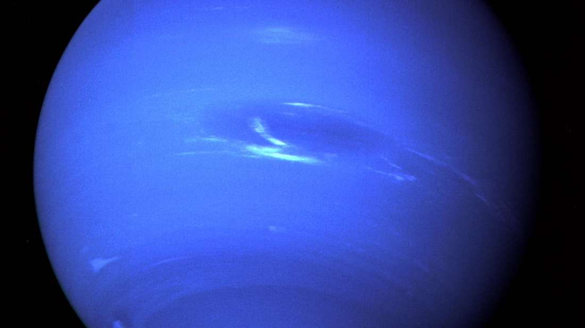
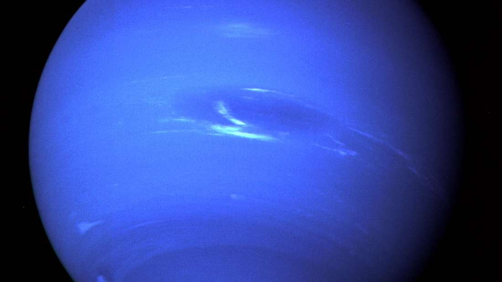

Neptun – gazowy olbrzym, ósma, najdalsza od Słońca planeta w Układzie Słonecznym. Nazwa planety pochodzi od rzymskiego boga mórz Neptuna. Wśród planet Układu Słonecznego jest czwartą pod względem średnicy i trzecią pod względem masy. Neptun jest ponad 17 razy masywniejszy od Ziemi i trochę masywniejszy od swojego bliźniaka, Urana, który ma masę prawie 15 razy większą od masy Ziemi. Krąży wokół Słońca w odległości około 30 razy większej niż dystans Ziemia-Słońce. Jego symbol astronomiczny to Neptune, stylizowana wersja trójzębu Neptuna.
Odkryty 23 września 1846 Neptun jest jedyną planetą Układu Słonecznego, której istnienie wykazano nie na podstawie obserwacji nieba, ale na drodze obliczeń matematycznych. Niespodziewane zmiany w ruchu orbitalnym Urana doprowadziły astronomów do wniosku, że podlega on perturbacjom pochodzącym od nieznanej planety. Neptun został następnie zaobserwowany przez Johanna Galle w miejscu przewidzianym przez Urbaina Le Verriera, a wkrótce został też odkryty jego największy księżyc, Tryton; żaden z pozostałych 13 znanych dziś księżyców Neptuna nie został odkryty za pomocą teleskopu aż do XX wieku. Neptun został odwiedzony przez tylko jedną sondę kosmiczną Voyager 2, która przeleciała w pobliżu planety 25 sierpnia 1989 roku.
Neptun przypomina składem Urana, co odróżnia je od większych gazowych olbrzymów, Jowisza i Saturna. Atmosfera Neptuna, choć – podobnie jak na Jowiszu i Saturnie – składa się głównie z wodoru i helu wraz ze śladami węglowodorów i prawdopodobnie azotu, zawiera większą ilość tzw. „lodów”, czyli substancji lotnych w warunkach ziemskich, takich jak woda, amoniak i metan. Astronomowie czasami kategoryzują Urana i Neptuna jako „lodowe olbrzymy” w celu podkreślenia tych różnic. Wnętrze Neptuna, podobnie jak Urana, składa się głównie z lodów i skał. Ślady metanu w zewnętrznych obszarach planety przyczyniają się do nadania jej charakterystycznego niebieskiego koloru.
W przeciwieństwie do niemal pozbawionej wyróżniających się struktur atmosfery Urana atmosferę Neptuna cechuje aktywność i widoczne układy pogodowe. Podczas przelotu w 1989 roku Voyager 2 odkrył na półkuli południowej Wielką Ciemną Plamę, porównywalną z Wielką Czerwoną Plamą na Jowiszu. Takie struktury są napędzane przez najsilniejsze wiatry w Układzie Słonecznym; rekord prędkości wiatru to aż 2100 km/h. Ze względu na dużą odległość od Słońca zewnętrzna atmosfera Neptuna jest jednym z najzimniejszych miejsc w Układzie Słonecznym; temperatura efektywna widocznej „powierzchni” planety to około −226,5 °C (46,6 K). Jednak w centrum planety temperatura sięga około 5100 °C.
Neptun ma słaby i pozornie niekompletny system pierścieni. Pierwsze sygnały o istnieniu tych struktur pochodzą z lat 60. XX w., ale dopiero w 1989 roku sonda Voyager 2 bezsprzecznie potwierdziła ich istnienie.
 
